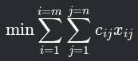
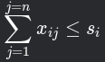
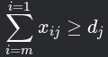

Transportation Optimization and Linear Programming
Optimization problems are one of the most common problems in business. Optimization is used to determine how to maximize (usually profit) or minimize (usually cost) some objective with a set of constraints. To approach an optimization problem, we must distill the problem to identify the objective and constraints which are expressed terms of decision variables and formulated as a system of linear equations. Once the problem is modeled, we can use a technique called linear programming to find an optimal solution. Dynamic languages like Python make solving linear programming problems very easy.
Suppose we are trying to minimize the cost of supplying electricity from 50 power plants to 100 cities. We are given two spreadsheets:
supply_demand.csv: contains a list of all power plant output levels and demands for each city
cost.csv: contains the cost to deliver power from each plant and city
How do we decompose this problem to identify the decision variables to formulate an objective function and constraint function?
First, we define a set of supply points from which goods are shipped. Supply point can supply at most units of product. In this case, it is the list of power plants and their respective output levels.
supply= pd.DataFrame.from_csv('supply_demand.csv')
supply = supply.drop(columns=['Demand','million kwh.1'], axis=1)
supply = supply.dropna(inplace=False)
supply = supply.reset_index()
supply.columns = ['plant','supply']
supply = supply.set_index('plant')
Next, we define a set of demand points to which the goods are shipped. Demand point must receive at least units of product. This is the list of cities and their power demands.
demand = pd.DataFrame.from_csv('supply_demand.csv')
demand = demand.reset_index()
demand = demand.drop(columns=['Supply','million kwh'], axis=1)
demand = demand.dropna(inplace=False)
demand.columns = ['city','demand']
demand = demand.set_index('city')
Finally, each unit produced at supply point and shipped to demand point incurs a cost of . This is our decision variables - each variable describes a route between each plant and city and the cost of delivery:
cost_tbl = pd.DataFrame.from_csv('Cost.csv')
plant_list = pd.DataFrame(cost_tbl.index).dropna(inplace=False)
city_list = pd.DataFrame(cost_tbl.columns).dropna(inplace=False)
cost_rows =cost_tbl.index
cost_columns = cost_tbl.columns
cost_routes = []
cost_total = []
for i in cost_rows:
for j in cost_columns:
cost_routes.append((i,j))
cost_total.append(cost_tbl.loc[i,j])
tmp_rts = pd.DataFrame(cost_routes)
tmp_rts['cost'] = cost_total
tmp_rts.columns = ['plant','city','cost']
tmp_rts = tmp_rts.set_index(['plant','city'])
route_vars = LpVariable.dicts("route_nodes",((i,j)for i in plant_list.values.flatten() for j in city_list.values.flatten()),lowBound=0)
Now we can formulate the objective function and constrains in terms of the decision variables. The objective is to find a set of routes that minimizes the cost of delivering power from plant to city . This is represented as: 
model += lpSum([route_vars[plant,city] * tmp_rts.loc[(plant,city),'cost'] for plant,city in tmp_rts.index])
The supply constraints across all plants in terms of the decision variables. This is expressed as: 
for p in plants:
model += lpSum([route_vars[p,c] for c in cities]) <= supply.loc[p,'supply']
The total demand constraint across all cities. This is expressed as:

for c in cities:
model += lpSum([route_vars[p,c] for p in plants]) >= demand.loc[c,'demand']
The minimal cost is $14,1768.83 to power 100 cities.